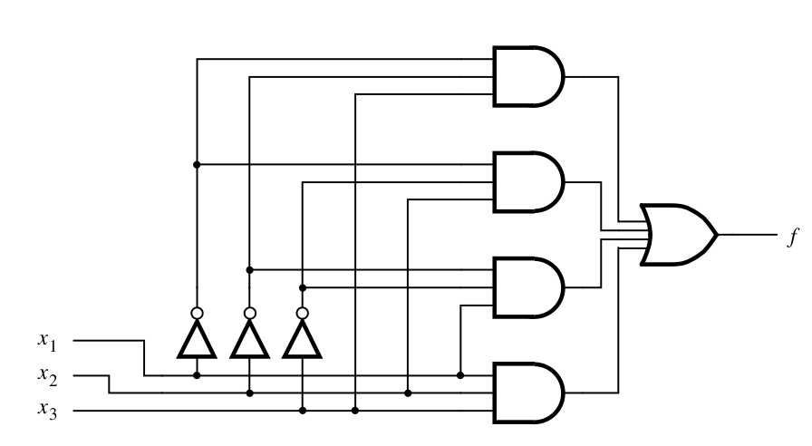
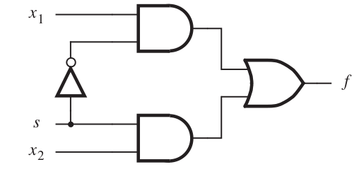
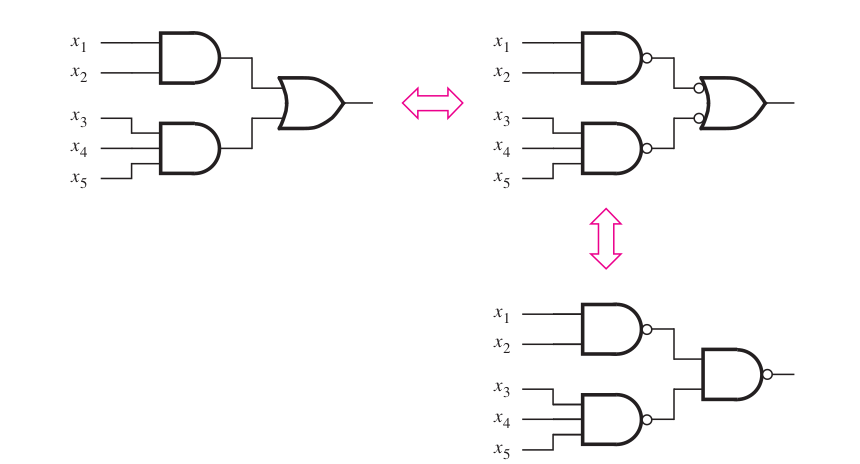
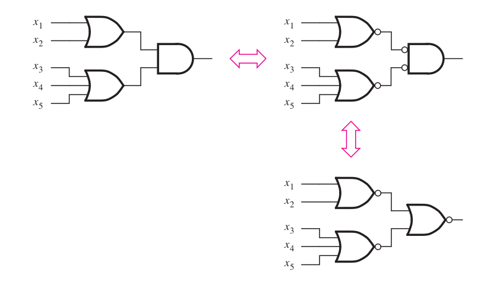

ECE 275: DeMorgan Theorem
Design of three-way light control

Soln: three-way light control
Truth table
| Row | x | y | z | f |
|---|---|---|---|---|
| 0 | 0 | 0 | 0 | 0 |
| 1 | 0 | 0 | 1 | 1 |
| 2 | 0 | 1 | 0 | 1 |
| 3 | 0 | 1 | 1 | 0 |
| 4 | 1 | 0 | 0 | 1 |
| 5 | 1 | 0 | 1 | 0 |
| 6 | 1 | 1 | 0 | 0 |
| 7 | 1 | 1 | 1 | 1 |
\[ f = \sum m (1, 2, 4, 7)
\\= \bar{x} \bar{y} z + \bar{x} y \bar{z} + x \bar{y} \bar{z} + xyz \]
| \(\bar{x}\) | \(x \) | |||
|---|---|---|---|---|
| \(\bar{y}\) | \(y \) | \(\bar{y}\) | ||
| \(\bar{z}\) | 0 | 1 | 0 | 1 |
| \(z\) | 1 | 0 | 1 | 0 |

Design a multiplexer


Soln: multiplexer
| Row | s | x_1 | x_2 | f |
|---|---|---|---|---|
| 0 | 0 | 0 | 0 | 0 |
| 1 | 0 | 0 | 1 | 0 |
| 2 | 0 | 1 | 0 | 1 |
| 3 | 0 | 1 | 1 | 1 |
| 4 | 1 | 0 | 0 | 0 |
| 5 | 1 | 0 | 1 | 1 |
| 6 | 1 | 1 | 0 | 0 |
| 7 | 1 | 1 | 1 | 1 |
\( f = \sum m(2, 3, 5, 7) \)
| \(\bar{s}\) | \(s \) | |||
|---|---|---|---|---|
| \(\bar{x_1}\) | \(x_1 \) | \(\bar{x_1}\) | ||
| \(\bar{x_2}\) | 0 | 1 | 0 | 0 |
| \(x_2\) | 0 | 1 | 1 | 1 |
\(f = sx_1 + \bar{s} x_2 \)
\(f = sx_1 + \bar{s} x_2 \)
DeMorgan's theorem
- \( \overline{x \cdot y} = \bar{x} + \bar{y} \)
- \( \overline{x + y} = \bar{x} \cdot \bar{y} \)
DeMorgan's theorem
- \( \overline{x \cdot y} = \bar{x} + \bar{y} \)
- \( \overline{x + y} = \bar{x} \cdot \bar{y} \)

Prove that for two variable function
\( \overline{m}_0 = M_0 \)Soln: Prove that for two variable function
\( \bar{m}_0 = M_0 \) \begin{align} m_0 &= \bar{x}_1 \bar{x}_2 & \text{ by definition of } m_0 \\ \implies \bar{m}_0 &= \overline{\bar{x}_1 \bar{x}_2} & \\ &= \bar{\bar{x}}_1 + \bar{\bar{x}}_2 & \text{ by DeMorgan's theorem } \\ &= x_1 + x_2 = M_0 & \text{ by definition of } M_0 \end{align}Prove that
If \( x + y = 1 \) and \( xy = 0 \) then \( \bx = y \)Soln: Prove that
If \( x + y = 1 \) and \( xy = 0 \) then \( \bx = y \)
\begin{align}
&x + y = 1
\\
&\implies x \bx + y \bx = \bx & \text{ multiply both sides by } \bx
\\
&\implies y \bx = \bx & \because x \bx = 0
\\
&\implies y \bx + y x = \bx + y x & \text{ add } y x \text{ to both sides }
\\
&\implies y (\bx + x) = \bx & \text{by dist. prop. and } xy = y x = 0
\\
&\implies y = \bx &
\end{align}
Prove that for three variable function
\( \sum m(0, 2, 3, 7) = \prod M(1, 4, 5, 6) \)Soln: Prove that for three variable function
\begin{align} \sum m(0, 2, 3, 7) &= m_0 + m_2 + m_3 + m_7 \\ &= \overline{ m_1 + m_4 + m_5 + m_6} \\ &= \bar{m}_1 \bar{m}_4 \bar{m}_5 \bar{m}_6 \\ &= M_1 M_4 M_5 M_6 \\ &=\prod M(1, 4, 5, 6) \end{align}Find the minimum cost expression for
\(f(x, y, z) = \sum m(0, 2, 3, 4, 5, 6, 7) \)Solution
\begin{align} f &= \sum m(0, 2, 3, 4, 5, 6, 7) \\ &= \overline{\sum m(1)} \\ &= \prod M(1) \\ &= (x + y + \bz) \end{align}SOP in terms of NAND gate
POS in terms of NOR gate
Thanks, Questions, Feedback?
https://vikasdhiman.info/ECE275-Sequential-Logic/